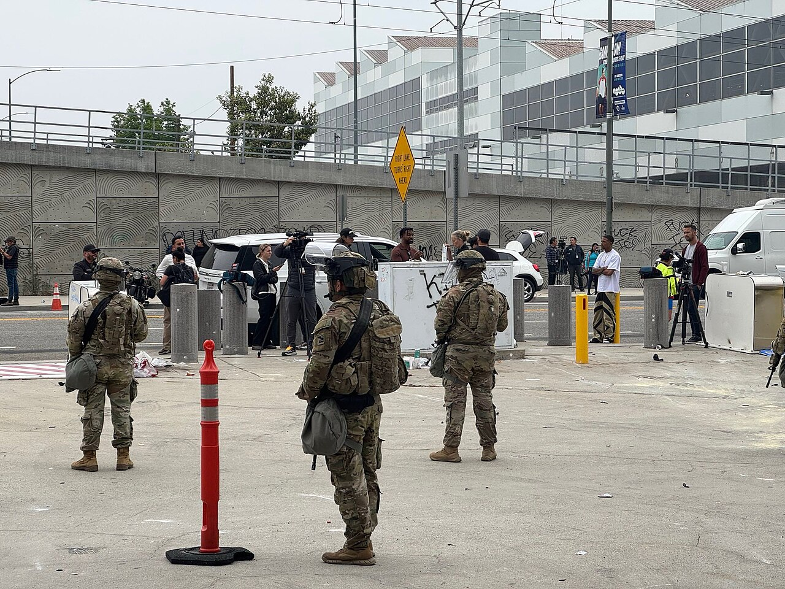

GRIEVANCE IV ◆ CONSTITUTIONAL RESTRAINT
He has sought to employ the nation’s military against domestic disorder without the exceptional conditions the law requires.
THE RECORD SHOWS
Federal courts, including the Supreme Court, blocked National Guard deployments to several American cities after finding serious deficiencies in the claimed legal authority.

The administration federalized or sought to deploy Guard troops in Los Angeles, Portland, Chicago, and other cities to protect personnel and property during immigration protests. A Portland judge appointed by Trump ruled that no rebellion justified the deployment; the Supreme Court declined to authorize the Chicago operation at its preliminary stage. The government cited threats to federal agents, and other deployment disputes had differing procedural outcomes. A preliminary stay is not a final ruling on every deployment.
A DOCUMENTED SEQUENCE
3 MILESTONES- Summer 2025The administration deployed or federalized National Guard forces during Los Angeles immigration protests.
- November 2025A federal district judge barred the Portland deployment after finding no qualifying rebellion.
- December 23, 2025The Supreme Court declined to lift the preliminary block on the Chicago deployment.